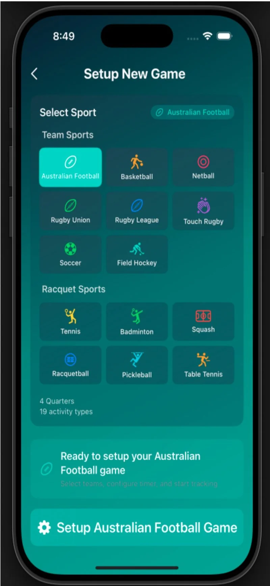
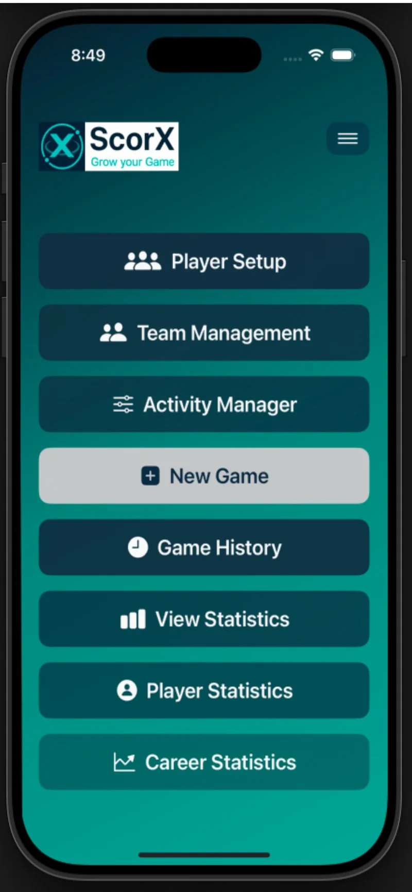

1
Download & Setup
Download ScorX & Create Your First Team
- Download ScorX from the App Store (free)
- Open the app and complete the quick onboarding
- Select your primary sport (you can add more later)
- Create your first team and add yourself with your name and jersey number
- Optional: Add a photo of yourself
⏱️ Time: 2-3 minutes

2
Start a Game
Select Your Sport & Start Scoring
- Tap "New Game" from the home screen
- Choose your sport (if you track multiple)
- Select your team and opposition
- Configure timer settings (or choose manual mode)
- Tap "Start Game" and begin scoring!
⏱️ Time: 30 seconds

3
Score & Track
Record Scores & Player Actions in Real-Time
- Tap scoring buttons as plays happen (goals, points, etc.). Usually a parent or coach does this from the sideline while you play
- Track your own actions (assists, tackles, aces, etc.)
- Timer runs automatically (or control manually)
- Watch live stats update in real-time
- End game when complete
⏱️ Time: Duration of your game

4
Review & Export
View Statistics & Export Data
- Review comprehensive game statistics
- See your own performance breakdown
- View interactive charts and performance graphs
- Export to CSV (ScorX Premium) for external analysis
- Share your results with your team and family
⏱️ Time: Instant